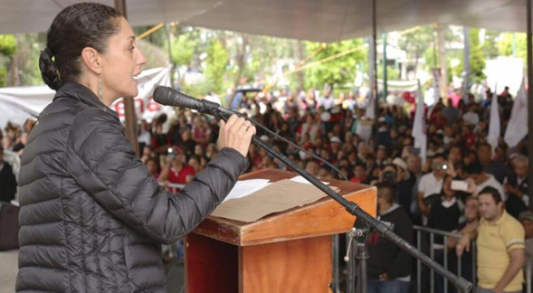

1977
Desde los 15 años luché por la educación pública y la democracia
1986
Dirigente del Consejo Estudiantil Universitario, que luchó y triunfó
contra la privatización de la UNAM
2000
Titular de la Secretaría del Medio Ambiente del Distrito Federal.
Creamos la primera ciclovía de la hoy CDMX, Construimos el segundo
piso del periférico, Logramos la reducción de emisiones contaminantes
en 30%
2006
Vocera de la campaña de quien hoy está en el máximo puesto de elección
popular y Secretaria del Patrimonio Nacional en el gabinete del
Gobierno Legítimo
2008
Encabecé el movimiento de "Las Adelitas" para resistir a las reformas neoliberales que buscaban privatizar el petróleo y los recursos naturales
2014
Orgullosa Fundadora de MORENA, el movimiento que hoy transforma cada rincón de México y el único partido en el que he militado
2015
Jefa Delegacional de Tlalpan
• Fuimos reconocidos como la delegación no.1 en atención ciudadana
• Construimos 21 ciberescuelas
• Renovamos el sistema hidráulico en la zona Ajusco

2018
Primera mujer electa Jefa de Gobierno de la Ciudad de México
2023
• Coordinadora Nacional de los Comités en Defensa de la Cuarta Transformación. Fui electa por el pueblo y asumí el liderazgo del movimiento con el Bastón de Mando que me entregó nuestro dirigente histórico de MORENA.
• Precandidata única a la Presidencia de la República, para seguir haciendo historia y continuar con la Transformación del país
2024
Candidata a ala Presidencia de la República